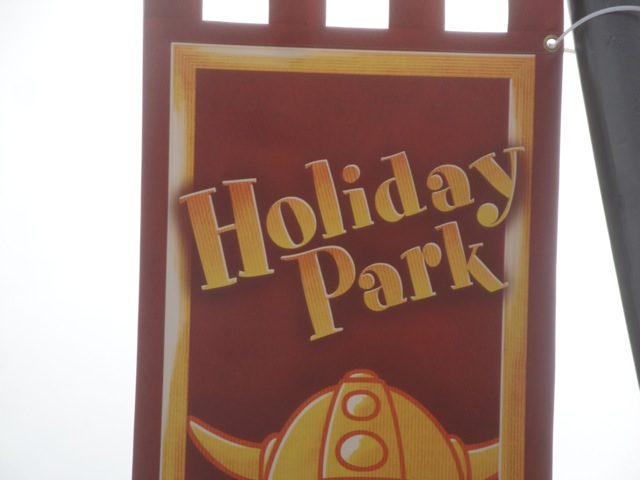
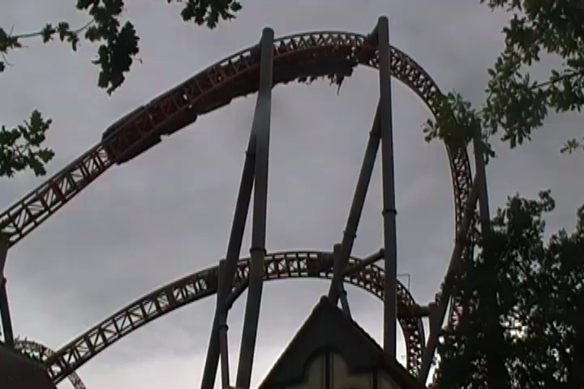
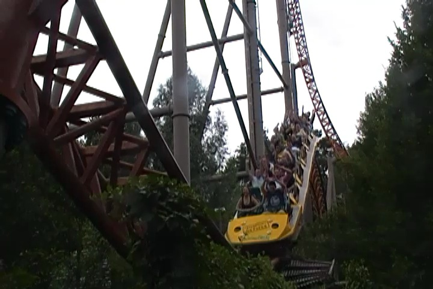
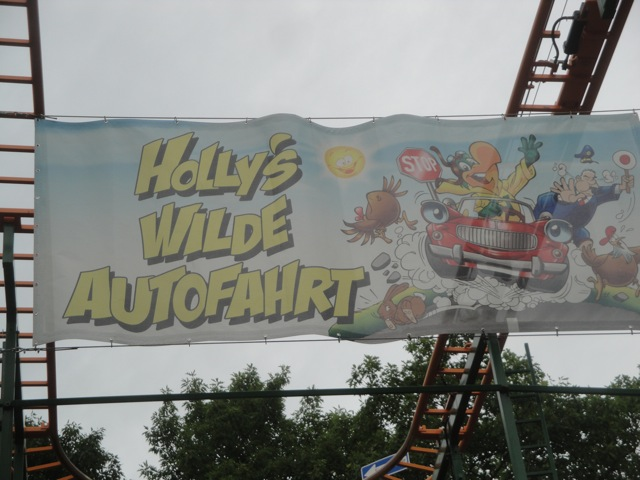

TPR's Mega Europe Trip
Rome Rome Credit Whoring Rainbow Magicland Fiabilandia Mirabilandia
Movieland Studios Gardaland
Walygator Parc
Holiday Park
Europa Park
Fort Fun Heide Park Schlossbeck Movie Park Germany Phantasialand
Parc Asterix Disneyland Paris
 Well after afun morning at Walygator, we went over to Germany so we could check out Holiday Park.
Well after afun morning at Walygator, we went over to Germany so we could check out Holiday Park.
Hmm. The park really looks nice. I see Plopsa made some nice changes to the park.

Well there's only one main reason we decided to come to Holiday Park.
Yep!!! To check out their mascot Holly the Parrot!!!!
Actually what we really came for is just over here.
 Yeah. We came to ride Expedition G Force.
Yeah. We came to ride Expedition G Force.
Yeah. I know we have ERT on it later tonight, but we're gonna still wait in the 20 minute line for it now. Mostly for two reasons. 1: I'm antsy since I've been f*cking wanting to ride this coaster for years and after years and years of waiting, I'm not going to wait a couple more hours. And 2: I'm getting an insurance ride in incase the ride decides to blow up and ERT has to be cancelled. But hey. That's a very unlikely scenario. But with a ride this good, you don't want to risk it.
The park must have known we were coming today.
All right. Its time to ride this thing.
 Dude. That is one of the best first drops ever. An insane assload of laterals and ejector air!!! =)
Dude. That is one of the best first drops ever. An insane assload of laterals and ejector air!!! =)
 And hey. After that insanity just comes some really long goes on forever floater air.
And hey. After that insanity just comes some really long goes on forever floater air.
 But don't you worry about the lack of laterals. We've got that covered on this ride as well.
But don't you worry about the lack of laterals. We've got that covered on this ride as well.

These overbanks are very much like the one on Bizarro @ Six Flags New England where the curves are also really tight and have a whip to them and aren't just fun cruiser elements like on Xcelerator and Millenium Force.

All right. So now the question is where did it land on my Top 10 Steel Coasters List? Well, honestly, I'd say I give it the #1 spot. Though really, at this point, its kind of pointless since everythings so good and close together that I feel like I'm picking a name out of a hat, but hey. It really is one of the best coasters I've been on. Can't wait for tonights ERT.
 What is up with the girl in white?
What is up with the girl in white?
Ok. Lets go check out the rest of the park starting with their dark ride.
Ok, so I'm not exactly sure what this dark ride is about. I just see these two together.
 OH NO!!!! BOOBS!!!! PROTECT THE CHILDREN FROM THE HORRORS!!!!! =)
OH NO!!!! BOOBS!!!! PROTECT THE CHILDREN FROM THE HORRORS!!!!! =)
 All right. Lets just focus on getting the other two credits here.
All right. Lets just focus on getting the other two credits here.
Yeah. After Expedition Ge Force, this is what we have to suffer through.
Though to be fair to the ride, this was by far the best Vekoma Corkscrew that I had been on. It was fast and not that rough. I had fun.

Now we just need to focus on the other credit. Hollys Wilde Auto-Fahrt.
Yeah. Its just another Wild Mouse. Nothing special.
Much like the Corkscrew, this thing was running great. It was completely trimless and running like a bat out of hell.
 Hey look!!! The Starflyer here actually has some height to it!!! It actually feels intense!!!! I loved it!!!!
Hey look!!! The Starflyer here actually has some height to it!!! It actually feels intense!!!! I loved it!!!!
I've heard good things about this log flume.
 And yeah. Its got a nice theme, a fun little backwards section, and a cool double drop. Yeah, this is a good one.
And yeah. Its got a nice theme, a fun little backwards section, and a cool double drop. Yeah, this is a good one.
Ok,lets get some dinner in before we head over for our ERT.
 Hey look!!! Club Cool was right!!! They really do have Mezzo Mix in Germany!!! Funny how I never saw a single Beverly in all of Italy, and now I constantly see Mezzo Mix in Germany. =)
Hey look!!! Club Cool was right!!! They really do have Mezzo Mix in Germany!!! Funny how I never saw a single Beverly in all of Italy, and now I constantly see Mezzo Mix in Germany. =)
 Dude. The Schnitzel they have in this park is just fantastic. Yeah, Great Schnitzel, Fries, and High Quality German Beer sounds like a good dinner to me.
Dude. The Schnitzel they have in this park is just fantastic. Yeah, Great Schnitzel, Fries, and High Quality German Beer sounds like a good dinner to me.
Oh no. It didn't happen.
SH*T!!!!! EXPEDITION GE FORCE BROKE DOWN RIGHT BEFORE OUR ERT!!!! AND IT BROKE DOWN GOOD!!!!!! =(
But they opened up the Drop Tower for us while they tried fixing Expedition G Force.
It was a good drop tower, but from what I've been told, it was rethemed to some random British Kids Show. I have no idea what its about, but I already hate it.
There. That makes the show much better.
While the parks maintenence crew was doing their damn best job to fix the ride for us, the park treated us to complementary ice cream and muffins.
"Hey, I may have missed Expedition Ge Force since I was too busy drinking beer, but look at this way. Now I can drink even more beer!!!!"
"DAMN YOU INTAMIN GODS!!!!!!"
Ooh. Everyones lined up. This should be good.
OOH!!! THEY MADE PROGRESS!!! WE JUST MIGHT GET OUR ERT AFTER ALL!!!!!
 After a couple test runs, it broke down again and it would take even more time, so yeah. We couldn't wait any more and had to just leave. Yeah, it sucks. But hey, thats just life. Nasty Sh*t happens. And I want to thank Holiday Park for providing the ice cream, beer, and muffins and for doing their damn best they could to get it fixed. They easily could've just said "Yeah. It broke. Sorry. Sh*t out of luck. Bye." But they did their absolute best to try and get our ERT going again. Well I'll definetly be back to get some more Expedition Ge Force rides since it is one of my favorite coasters ever and this park is just awesome in general.
After a couple test runs, it broke down again and it would take even more time, so yeah. We couldn't wait any more and had to just leave. Yeah, it sucks. But hey, thats just life. Nasty Sh*t happens. And I want to thank Holiday Park for providing the ice cream, beer, and muffins and for doing their damn best they could to get it fixed. They easily could've just said "Yeah. It broke. Sorry. Sh*t out of luck. Bye." But they did their absolute best to try and get our ERT going again. Well I'll definetly be back to get some more Expedition Ge Force rides since it is one of my favorite coasters ever and this park is just awesome in general.
Europa Park
Home